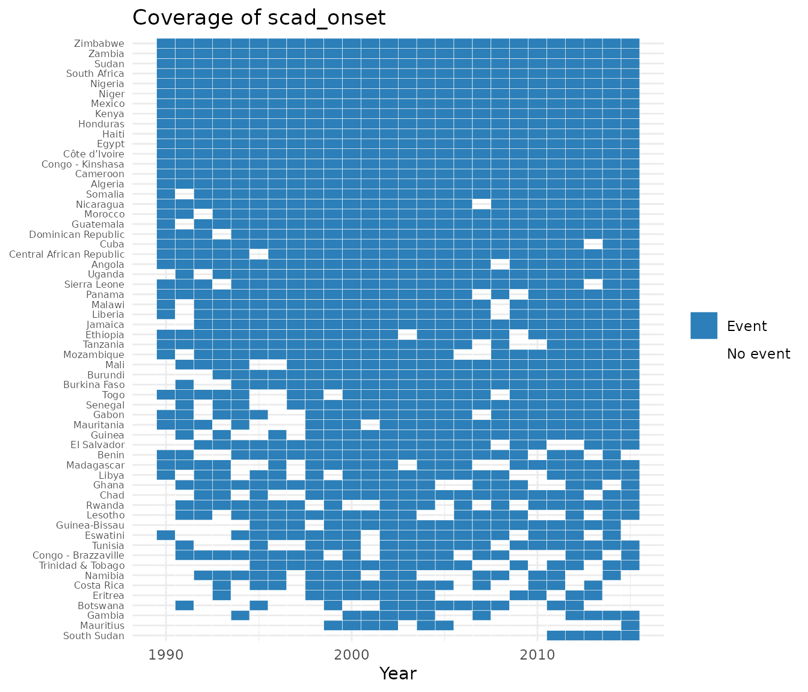

contentiousR creates reproducible country-year panels
for contentious politics and civil conflicts research. Every public
loader supports Correlates of War ("cow") and
Gleditsch-Ward ("gw") country codes.
Build and enrich a panel
Start with the universe of states, then add data with left joins. The add functions infer the coding system and requested years from the panel.
library(contentiousR)
panel <- build_states_panel(
start_year = 2000,
end_year = 2002,
coding_system = "cow"
)
analysis_data <- panel |>
add_gdp() |>
add_conflict("ucdp_prio") |>
add_leader_data("archigos")
analysis_data[1:4, c(
"country", "year", "gdp_pcap", "ucdp_prio_incidence", "leader"
)]
#> country year gdp_pcap ucdp_prio_incidence leader
#> 1 United States 2000 55889.52 NA Clinton
#> 2 United States 2001 55783.75 1 G.W. Bush
#> 3 United States 2002 56127.44 1 G.W. Bush
#> 4 Canada 2000 48531.95 NA ChretienAn unmatched row remains NA. This is deliberate: a
source may not cover a country-year, and lack of a match should not
automatically be interpreted as zero events.
Load data separately
Standalone loaders are useful when you want to inspect or aggregate data before joining them.
conflicts <- conflict_data(
start_year = 2000,
end_year = 2002,
dataset = "ucdp_prio",
coding_system = "gw"
)
head(conflicts)
#> # A tibble: 6 × 13
#> gw year ucdp_prio_incidence ucdp_prio_onset ucdp_prio_n_conflicts
#> <int> <dbl> <int> <int> <int>
#> 1 2 2001 1 1 2
#> 2 2 2002 1 0 1
#> 3 100 2000 1 0 1
#> 4 100 2001 1 0 1
#> 5 100 2002 1 0 1
#> 6 200 2001 1 1 1
#> # ℹ 8 more variables: ucdp_prio_intensity_max <int>, ucdp_prio_war <int>,
#> # ucdp_prio_cumulative_intensity <int>, ucdp_prio_type_max <int>,
#> # ucdp_prio_intrastate <int>, ucdp_prio_interstate <int>,
#> # ucdp_prio_incompatibility_max <int>, ucdp_prio_ep_end <int>UCDP/PRIO distinguishes active conflict-years
(ucdp_prio_incidence) from the first year of an episode
(ucdp_prio_onset). See
vignette("data-sources", package = "contentiousR") before
interpreting any source-specific variable.
Conflict spells (peace-years)
add_spells() turns a binary conflict column into a
duration counter — years since the last event for that state, restarting
after each new one. This is the same construct as
peacesciencer::add_spells(), useful as a control for
temporal dependence in event-history models (e.g. with cubic splines).
It needs a column without NA, so filter first:
spell_data <- build_states_panel(1990, 2005, coding_system = "gw") |>
add_conflict("ucdp_prio") |>
tidyr::drop_na(ucdp_prio_onset) |>
add_spells(event = "ucdp_prio_onset")
spell_data[spell_data$gw == 2, c("gw", "year", "ucdp_prio_onset", "ucdp_prio_spell")]
#> gw year ucdp_prio_onset ucdp_prio_spell
#> 1 2 2001 1 0
#> 2 2 2002 0 0
#> 3 2 2003 1 1
#> 4 2 2004 0 0
#> 5 2 2005 0 1If event is omitted, add_spells() looks for
exactly one column ending in _onset,
_incidence, or _ongoing and uses that; it
errors if none or several are found. _onset-style columns
treat every 1 as an independent event by default;
_incidence/_ongoing-style columns collapse a
run of consecutive 1s into one event, leaving the
continuation years NA in the output (override this with the
ongoing argument).
Lagged variables
add_lag() adds a lagged version of one or more columns,
computed within each state after sorting by year — grouping by state
before lagging is essential in panel data, otherwise a lag could pull in
another country’s value. Unlike a plain dplyr::lag(), it
checks that the preceding row is genuinely n years earlier,
so a gap in the year sequence produces NA rather than
silently reaching further back than intended:
build_states_panel(1990, 1995, coding_system = "cow") |>
add_gdp() |>
add_lag(vars = c("gdp_pcap", "gdp_growth"), n = 1) |>
dplyr::filter(cow == 2) |>
dplyr::select(cow, year, gdp_pcap, gdp_pcap_l, gdp_growth_l)
#> # A tibble: 6 × 5
#> cow year gdp_pcap gdp_pcap_l gdp_growth_l
#> <dbl> <dbl> <dbl> <dbl> <dbl>
#> 1 2 1990 45755. NA NA
#> 2 2 1991 45035. 45755. 3.18
#> 3 2 1992 45912. 45035. -1.58
#> 4 2 1993 46485. 45912. 1.95
#> 5 2 1994 47696. 46485. 1.25
#> 6 2 1995 48326. 47696. 2.60Each requested variable gets one new column named
<var>_l. Call add_lag() again
(optionally with a different n) for additional lags.
Visualizing onsets
plot_coverage() draws a state-by-year heatmap of a
binary (0/1) event column: 1 years are shaded as an event,
0 years as no event, and years where the source has no data
— either var is NA, or the state does not
appear in the panel that year at all, e.g. before independence — are
left blank. States that never have the event are dropped by default
(drop_empty = TRUE), since an all-blank/grey row adds
clutter without showing where events actually happened.
if (requireNamespace("ggplot2", quietly = TRUE)) {
build_states_panel(1990, 2015, coding_system = "cow") |>
add_conflict("ucdp_prio") |>
plot_coverage("ucdp_prio_onset")
}
ucdp_prio is used here rather than, say,
scad, because its onset column has a genuine
0: add_conflict("ucdp_prio") codes every
country-year with an active conflict as either a fresh episode
(1) or a continuation of one already under way
(0), so both colors actually appear.
scad_onset (and similarly beissinger_onset)
only has rows for country-years with at least one recorded event — there
is no explicit “we checked and found nothing” 0 — so
plotting it directly shows just Event and blank, never
grey. The case study article turns that
NA into an explicit 0 with
replace_na() before plotting beissinger_onset,
which is a modeling assumption (absence of a recorded event means no
event), not a neutral default.
Optional V-Dem data
V-Dem is not bundled and its R data package is not on CRAN. Install it from its official repository, then request only the indicators you need:
build_states_panel()
Creates a state-year panel with optional filters:
panel <- build_states_panel(
start_year = 1946,
end_year = 2019,
coding_system = "cow", # or "gw"
exclude_microstates = TRUE,
exclude_non_un = TRUE,
exclude_islands = FALSE
)
load_gdp_data() / add_gdp()
Two GDP sources are available via dataset.
"gapminder" (default) returns gdp_pcap,
log_gdp_pcap, and gdp_growth.
"fariss" returns the latent GDP and GDP per capita
estimates from Fariss, Anders, Markowitz, and Barnum (2022) as
fariss_gdp and fariss_gdppc, with much wider
coverage (1500–2019) but units that are not independently verified in
this package — see
vignette("data-sources", package = "contentiousR").
# Standalone
gdp <- load_gdp_data(start_year = 1990, end_year = 2015, coding_system = "cow")
fariss_gdp <- load_gdp_data(1700, 2015, dataset = "fariss", coding_system = "cow")
# Pipeline
panel |> add_gdp()
panel |> add_gdp(dataset = "fariss")
load_population_data() / add_pop()
Three population sources are available via dataset.
| Dataset | Source | Coverage | Returned columns |
|---|---|---|---|
"wpp" (default) |
UN World Population Prospects 2024 | 1949–2023 | wpp_pop |
"nmc" |
Correlates of War NMC v7.0 | 1816–2022 |
nmc_tpop, nmc_upop
|
"fariss" |
Fariss et al. (2022) latent estimate | 1500–2019 | fariss_pop |
# Standalone
pop_wpp <- load_population_data(1990, 2015, dataset = "wpp", coding_system = "cow")
pop_nmc <- load_population_data(1900, 2015, dataset = "nmc", coding_system = "cow")
# Pipeline
panel |> add_pop()
panel |> add_pop(dataset = "nmc")add_population() is identical to add_pop(),
under the unabbreviated name.
load_military_expenditure_data() /
add_military_expenditure()
Three military expenditure sources are available via
dataset.
| Dataset | Source | Coverage | Returned columns |
|---|---|---|---|
"sipri" (default) |
SIPRI Milex Database v1.2 | 1949–2025 |
sipri_milex, sipri_milburden
|
"nmc" |
Correlates of War NMC v7.0 | 1816–2022 | nmc_milex |
"barnum" |
Barnum et al. (2025) latent estimate | 1816–2019 |
barnum_milburden, barnum_sipri,
barnum_nmc
|
# Standalone
milex_sipri <- load_military_expenditure_data(1990, 2015, dataset = "sipri", coding_system = "cow")
milex_barnum <- load_military_expenditure_data(1900, 2015, dataset = "barnum", coding_system = "cow")
# Pipeline
panel |> add_military_expenditure()
panel |> add_military_expenditure(dataset = "barnum")Unlike the Fariss GDP/population estimates, Barnum et al.’s
underlying model does not publish a single combined military expenditure
value on a real monetary scale, so barnum_sipri and
barnum_nmc are the model’s posterior estimate of two
specific indicators rather than one “latent” series. See
vignette("data-sources", package = "contentiousR") for what
each represents and why they are not directly comparable to
sipri_milex / nmc_milex.
load_vdem_data() / add_vdem()
V-Dem indicators. A default set of democracy, civil society, civil
liberties, and rule-of-law variables is loaded when
vars = NULL.
# Standalone
vdem <- load_vdem_data(
vars = c("v2x_polyarchy", "v2x_libdem"),
start_year = 1990,
end_year = 2015,
coding_system = "cow"
)
# Pipeline
panel |> add_vdem(vars = c("v2x_polyarchy", "v2x_libdem"))
load_leader_data() /
add_leader_data()
Country-year leader data from two sources. Each row contains the leader who held power at the end of the year; in transition years the latest-starting leader is kept.
| Dataset | Source | Coverage | Key variables |
|---|---|---|---|
"archigos" |
Archigos 4.1 | 1875–2015 |
entry, exit, irregular_entry,
irregular_exit, female_leader,
yrborn, posttenurefate,
leader_tenure
|
"reign" |
REIGN Leader List | 1921–2021 |
female_leader, military_bg,
birthyear, leader_tenure
|
# Standalone
arch <- load_leader_data(1990, 2015, dataset = "archigos", coding_system = "cow")
reign <- load_leader_data(1990, 2015, dataset = "reign", coding_system = "gw")
# Pipeline
panel |> add_leader_data(dataset = "archigos")
panel |> add_leader_data(dataset = "reign")Interoperate with peacesciencer
Functions such as peacesciencer::add_archigos() expect
ccode/gwcode keys plus attributes that
describe the state system and unit of analysis. Use
add_from_peacesciencer() to supply these temporarily and
return a panel with only contentiousR’s original country-code key:
library(peacesciencer)
analysis_data |>
add_from_peacesciencer(peacesciencer::add_archigos)For multiple consecutive additions, call
as_peacesciencer_panel() once and then apply the
peacesciencer functions directly. Neither helper changes
country codes, rows, or substantive variables.